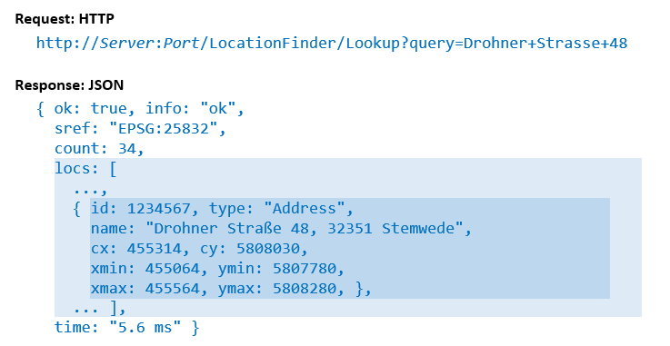

Dira GeoSystem's LocationFinder is probably the fastest interactive search over your place and address data. It features fine grained configuration and normatization options, provides an easy REST interface for creating your own clients, and seamlessly integrates into the ArcGIS platform. As an on-premise solution it is particularly suitable for your sensitive in-house data.
LocationFinder provides interactive search for named locations such as addresses, place names, land parcels, hydrants, retail outlets, etc.
LocationFinder assumes that you have your own location data and want to make it available for interactive search and/or map panning/zooming.
| Suppose you represent... | then you may want to search your... |
|---|---|
| Retailer | branches, competitors, customers |
| Emergency service | place names, mountain names, field names |
| Police of Fire Fighters | addresses, street names, districts, hydrants |
| Local Government | field names, land parcels (name, number), maintenance areas |
| Telecommunication Provider | antennas, addresses, administrative regions |

LocationFinder integrated into ArcGIS
LocationFinder has been optimized for speedy search, easy administration, and extensive configurability.

the simple REST API for integration
LocationFinder is a server-side solution. It consists of two programs: a Builder and a Service. The Builder reads your source data and builds an index structure. The Service consults this index to answer requests over a simple REST API. (It also implements a relevant subset of the Esri REST API, so that it can be integrated into the ArcGIS platform.) The Builder reads data from a simple XML format. (It can also read Esri Feature Classes and a few other formats through plugins.) The Builder's build configuration determines how the final search will “look and feel”. For example, it is possible to inject “keywords” for categories of places to help the end user in its search. It is also possible to “aggregate” entities to larger entities, for example to aggregate streets or communities from address points.
LocationFinder does not include an end-user interface! It has been designed to be integrated into other applications through its simple REST API. (Or it can be integrated directly into ArcGIS.) Dira GeoSystems is glad to help with integration.
You will need a Windows system with .NET Framework 4.8 and a fast local disk to hold the index. There are no other dependencies.
The next major version of LocationFinder will require .NET Core (in its current version) and be available for Windows, Linux, inside containers, or wherever .NET Core will be supported.
A Builder plugin for reading Esri Feature Classes using an ArcGIS Pro installation (instead of ArcMap or ArcGIS Server) is being prepared.

LocationFinder is licensed per instance of the service. Instances that are used purely for testing are not counted. The first instance pays the full price, all other instances per customer come at a 50% discount.
There are two options for buying LocationFinder:
Please contact us at hello@dirageosystems.ch or phone +41 44 2448442 for further information or a quote.